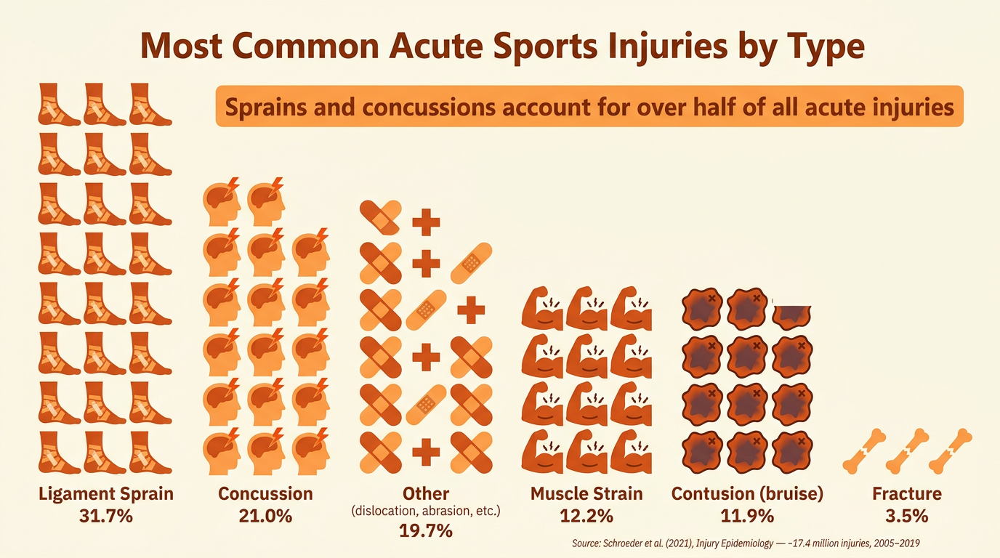

What Are Acute Injuries?
An acute injury is an injury caused by sudden trauma — a single, specific event such as a tackle, a fall, or a collision. Unlike chronic injuries that develop gradually over time, acute injuries happen in an instant and have an obvious cause.
Acute vs chronic: An acute injury is caused by a sudden event (e.g. a broken bone from a tackle). A chronic injury develops over time through repeated stress or overuse (e.g. a stress fracture from long-distance running). In the exam, you must be able to distinguish between the two.
Acute injuries fall into two broad categories:
- Soft tissue injuries — damage to muscles, tendons, ligaments or skin (e.g. strains, sprains, cuts, bruises).
- Hard tissue injuries — damage to bones (e.g. fractures, dislocations, concussion).
Soft Tissue Injuries
Strains
A strain is damage to a muscle or tendon. A useful way to remember this is that the “T” in sTrain stands for Tendon. Strains are caused by overstretching, twisting, or sudden high-intensity movements.
- Symptoms: pain, swelling, bruising, loss of movement in the affected area.
- Treatment: PRICE protocol (Protection, Rest, Ice, Compression, Elevation).
- Sporting example: a hamstring strain in sprinting, caused by the muscle being overstretched during a powerful stride.
Sprains
A sprain is damage to a ligament — the tissue that connects bone to bone at a joint. Sprains are caused by a joint being forced beyond its normal range of motion.
- Symptoms: pain, swelling, bruising, instability of the joint.
- Treatment: PRICE protocol.
- Common examples: ankle sprain from landing awkwardly after a jump; ACL (anterior cruciate ligament) injury in the knee from twisting during a tackle.
Students often confuse strains and sprains. The key difference is in the tissue affected:
- Strain = damage to a muscle or tendon (connects muscle to bone). Remember: sTrain = Tendon.
- Sprain = damage to a ligament (connects bone to bone at a joint).
Both cause pain, swelling, and bruising. However, a sprain also causes instability at the joint because the ligament holding the bones together has been damaged. Both are treated with the PRICE protocol.

Skin Damage
Several types of skin damage count as acute soft tissue injuries:
- Abrasion (graze) — the surface layer of skin is scraped away. Common when sliding on astroturf or rough ground.
- Laceration (cut) — a deeper cut caused by a sharp object or direct impact, such as being struck by a hockey stick or studded boot.
- Blister — friction causes fluid-filled pockets on the skin. Common from ill-fitting shoes or repeated rubbing on the hands (e.g. rowing, gymnastics).
- Contusion (bruise) — impact causes bleeding under the skin, resulting in discolouration and tenderness. Common in contact sports from tackles and collisions.
Hard Tissue Injuries
Fractures
A fracture is a break or crack in a bone. Fractures are caused by direct impact, falls, or excessive force applied to the bone.
There are three main types of fracture you need to know:
- Simple (closed) fracture — the bone breaks but does not pierce through the skin. The skin remains intact over the break.
- Compound (open) fracture — the bone breaks through the skin, creating an open wound. This carries a much higher risk of infection and is more serious.
- Stress fracture — a small hairline crack in the bone caused by repeated stress over time. Strictly speaking, this is a chronic injury, but it is examinable alongside other fractures.
Treatment for fractures involves immobilising the area, getting an X-ray to confirm the break, and then applying a plaster cast or sling. Compound fractures and severe breaks may require surgery.
Dislocations
A dislocation occurs when a bone is forced out of its normal position at a joint. This is commonly seen at the shoulder, finger, and elbow joints.
- Causes: a direct impact or a fall that forces the joint out of alignment.
- Symptoms: severe pain, visible deformity at the joint, complete loss of movement.
- Treatment: do NOT attempt to relocate the bone yourself. Seek immediate medical attention. A medical professional will manipulate the bone back into place.
Concussion
Concussion is a brain injury caused by a blow to the head. It is increasingly recognised as one of the most serious injuries in sport, particularly in rugby and football where head-on collisions are common.
- Symptoms: headache, dizziness, confusion, nausea, memory loss, blurred vision, and in severe cases, loss of consciousness.
- Treatment: the player must be immediately removed from play. They need complete rest and a monitored recovery period before any return to activity.
Players who suffer a concussion must follow the GRTP (Graduated Return to Play) protocol. This is a step-by-step process where the player gradually increases activity levels over several days or weeks, only progressing to the next stage if symptom-free. Returning too soon risks a second, potentially more dangerous head injury.